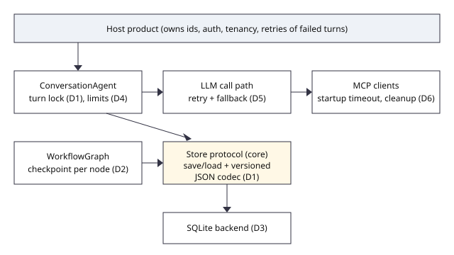

Research report, 20 November 2026. Compared libraries: Pydantic AI, LangGraph, OpenAI Agents SDK, with LiteLLM, Google ADK and the MCP Python SDK as secondary references. Target: agent_platform, a Python agent library that host products embed.
Answer. The three libraries converge on small, async, host-owned persistence interfaces, a typed error for limits, and store formats that evolve through tolerant readers rather than migrations. None of them makes per-turn persistence safe for tools with external effects. For agent_platform, the evidence supports extending its existing Checkpointer save/load protocol with a versioned JSON record, one SQLite backend, opt-in token limits, a five-class LLM error classifier, and bounded MCP startup and cleanup.
Findings that matter most.
Session protocol [S11, S10]; Pydantic AI stores a revisioned conversation record with usage beside messages [S15, S16]; LangGraph persists history as graph state in a checkpoint per thread [S17]. Item-level stores have had race bugs between concurrent writes on one session [S61, S64], and Google ADK corrupted histories when two turns ran on one session [S67].UsageLimitExceeded, and documents that the crossing request still completes, so the cap is soft [S2, S1, S3]. OpenAI and LangGraph cap only turns or steps [S4, S6].Recommended architecture. One core store protocol with a versioned JSON codec serves conversations and workflow checkpoints, backed by SQLite for single-host use (D1, D2, D3). Opt-in limits, a shared error classifier and an MCP lifecycle rule bound cost and failure (D4, D5, D6), and a failed turn is replayed from the last saved turn (D7).
Biggest open risk. A host that registers tools with external effects can see them run twice after a crash mid-turn, and the library gives no stable key to deduplicate them (assumption A3, decision D7).
Subject. How embeddable Python agent libraries persist runtime state and bound cost: (1) conversation stores, (2) workflow checkpoints and resume after a completed step, (3) per-run and per-conversation token limits, (4) retry versus fallback for permanent and transient LLM errors, (5) MCP client startup and shutdown.
Outcome. State of the art plus an architecture for agent_platform: core protocols with one reference backend in integrations/.
Constraints. The library is embedded in host products. It runs as a single instance first; multi-replica must stay possible. Tenancy and authentication belong to the host. State is saved after each completed turn; mid-run checkpoints and human-in-the-loop are out of scope. The current code already has a generic Checkpointer[T] protocol with save/load, used by ConversationAgent (whole history after each turn) and by workflows (WorkflowCheckpoint after each node), with only an in-memory implementation.
Research questions. What protocol shapes and backends exist; how histories and checkpoints are serialized and versioned; where limits are enforced and what error they raise; which errors are retried and which trigger fallback; how MCP clients are bounded at startup and cleaned up; and which failures have been reported for each approach.
Skipped sections. Existing-State Assessment (no prior report was supplied; the current code is described above), Data and Information Taxonomy (the system does not ingest data sources), Information-Fusion, Decision Architecture and Feedback Loops (the subject does not fuse sources, decide autonomously or learn).
Depth: standard. Search date: 20 November 2026. Five scout dimensions (conversation stores; checkpoint stores; usage limits; error policy plus MCP lifecycle; disconfirming evidence), then two gap scouts (MCP lifecycle; replay, concurrency and versioning), a critic pass that re-fetched 13 quoted edges, and one post-critic gap scout (fallback on context length, Google ADK concurrency, MCP connect timeout, pydantic bytes handling). Sources: 66 in the graph, 62 read in full, 4 skimmed and not cited; 32 repository pages (source code, issues, pull requests), 30 documentation pages, 3 forum threads, 1 industry blog. Pages were fetched through a summarizing tool, so quotes are short verbatim extracts. Grading: a claim is supported with one good source; strongly supported needs two independent sources, and documentation plus source code of the same project count as one. Stop conditions met: every research question has an answer or an open question node; late searches returned sources already in the graph; contradictions found were examined (D5). "State of the art" here means these libraries' public documentation and code as of November 2026.
OpenAI Agents SDK defines Session as a runtime-checkable protocol with get_items, add_items, pop_item and clear_session [S11, S10] and ships SQLite, Redis, SQLAlchemy, MongoDB, Dapr and server-side backends [S10]. Each item is stored as JSON of a Responses API item, with no version field seen [S12, S13]. Pydantic AI recently added a Conversation record (messages, usage, id) and an abstract ConversationStore with revision-checked writes; only an in-memory store ships for it [S15, S16]. LangGraph keeps short-term history as graph state in a checkpoint per thread_id, and its Store API serves long-term memory across threads [S17, S19]. All three leave the session id and authorization to the host [S10, S16].
LangGraph's BaseCheckpointSaver has put, put_writes, get_tuple and list with async twins [S18], three durability modes (exit, async, sync) [S20], and keeps writes of nodes that completed in a super-step so they are not re-run [S20]. Its default serializer is msgpack-based with pickle off by default and an allow-list [S21]. Pydantic AI removed graph-state persistence in its graph V2 because consistent snapshots are hard under parallel execution [S24], and moved run persistence to a harness StepPersistence capability with versioned, upgrade-only formats [S25]. OpenAI Agents SDK serializes a RunState for paused runs and leaves storage to the application [S28]; all three point to durable engines (Temporal, DBOS and others) for whole-run crash survival [S26, S4].
Pydantic AI UsageLimits covers requests, tool calls, input, output and total tokens, and cost [S1, S2]. It checks the request count and projected usage before each request and token counts after each response, raising UsageLimitExceeded [S2]. Token pre-counting is opt-in and limited to some providers [S1]. Limits apply to one run; longer windows need usage carried in, or the harness SpendLimits [S3]. OpenAI Agents SDK tracks usage per run for monitoring and caps only max_turns [S4, S5]; LangGraph caps only graph steps with recursion_limit [S6, S7].
Pydantic AI retries only through provider SDKs or an installed transport and warns that retry layers multiply [S32]. LangGraph's RetryPolicy retries connection errors and 5xx and excludes programming errors [S33, S34]. LangChain chat models skip 401 and 404 [S37], but with_fallbacks handles every exception by default [S38]. OpenAI Agents SDK retries are opt-in, and it documents no fallback chain [S39]. Pydantic AI's FallbackModel moved in November 2025 from HTTP status errors to every model API error [S40, S30], including rejected credentials, model names and context overflow [S29]. LiteLLM has dedicated context-window and content-policy fallbacks [S66].
Pydantic AI's MCP toolset bounds connect plus initialize with init_timeout (5 s) and has a 5-minute read timeout [S31, S54]. The OpenAI Agents SDK's per-request session timeout is 5 s [S35, S55], and its MCPServerManager adds a 10 s connect timeout, cleans up in reverse order on the same task, and recommends dropping failed servers [S36]. The MCP Python SDK closes stdin, waits 2 s, then kills the process tree [S50]. Closing a client from another task trips anyio's cancel-scope guard [S52, S53, S51]; Google ADK fixed it by giving each client an owner task [S53].
Evidence hierarchy, weakest to strongest: forum or blog opinion; vendor documentation; source code; reproduced issue; maintainer-confirmed fix. Most evidence here is observational: what documentation and code state. No benchmark or controlled experiment applies to this subject.
| Status | Claims |
|---|---|
| supported | 78 |
| requires_validation | 2 |
| disputed | 1 |
| weakly_supported | 1 |
| Kind | Claims |
|---|---|
| observed | 63 |
| inference | 9 |
| finding | 6 |
| recommendation | 4 |
No claim reaches strongly supported: most rest on one project's own documentation and code, which count as one source.
OpenAI Agents SDK compaction could silently delete a concurrent add_items on the same session [S61], and concurrent pop_item calls could return the same item [S64]. Its file SQLite session had no thread safety until a fix [S42]. Google ADK 1.24 changed a stale-session error into reload-and-append, and two concurrent runs then interleaved events and duplicated tool calls [S67]; overlapping turns also lost state on Spanner [S68]. A proposed optimistic-concurrency fix was closed unmerged [S69]. Given these reports, we infer that a library should serialize turns per conversation rather than rely on the store [C80]. Status: supported; applicability: single process.
Pydantic AI promises that V1 histories load in V2 [S45] and that adding a message part needs no migration [S16], yet it changed how stored retry parts are read [S45] and needs a load-time flag for older histories [S65]. LangGraph documents that type changes, required fields and renames break existing checkpoints [S22, S58], and its serializer hardening made some stored objects unserializable [S46]. Pydantic AI step persistence versions its format and reads upgrade-only [S25]. Status: supported.
Pydantic's ser_json_bytes and val_json_bytes default to utf8 and must be set equal for a round trip [S70]. Image and audio bytes in stored messages therefore need base64 on both sides. Status: supported.
Pydantic AI checks token limits after each response, so the request that crosses the line completes, and concurrent runs can each pass the check [S1, S3]. A stopped stream is charged only for usage reported so far [S3]. Request limits count loop turns, not provider requests, so fallback attempts add tokens that a request cap does not bound [S1]. A call-count cap is not a token cap [S49]. Status: supported.
Pydantic AI's maintainers note that FallbackModel cannot retry failures above it, such as output validation [S44]. Pydantic AI and LiteLLM both treat context overflow as a fallback case [S29, S66]. We infer that the fallback chain should re-raise malformed-request errors but move on for context length (to a larger window) and content policy [C76]. The first-draft recommendation never to fall back on context length is now disputed [C45].
A cancelled OpenAI Agents SDK run left both refunds in an external ledger while the session held only the user message [S63]. A session append that committed and then raised duplicated input on retry [S62]. A guardrail path dropped a tool call from the saved session, so the tool ran twice [S48]. Pydantic AI says side-effect deduplication is the orchestrator's responsibility and tools with external effects need their own idempotency [S25]. A practitioner blog argues the key must come from durable run state, not the model [S47]. Status: supported.
A LangGraph user reports checkpoint_blobs growing much faster than checkpoints [S41]. This applies to per-step saving of whole state; a per-turn record with bounded history grows more slowly. Status: supported, one user report.
agent_platform today: the store has only an in-memory backend; there is no serialization format; usage is not stored with the conversation; the fallback chain falls through on every error and batch methods retry every error (audit finding F6); MCP shutdown can skip clients after one failure and the handshake has no timeout (audit finding F11).| Component | Purpose | Inputs | Outputs | Evidence | Dependencies | Failure modes |
|---|---|---|---|---|---|---|
| Store protocol and codec | Persist records by namespace and key | ConversationRecord, WorkflowCheckpoint | Record or none | [S15, S18, S25] | pydantic | Unknown format version; bytes round trip |
| SQLite backend | Reference durable store | JSON payload | JSON payload | [S10, S20, S25] | stdlib sqlite3 | Locked database; shared between hosts |
| Turn lock | One turn per conversation at a time | Conversation id | Serialized turns | [S61, S67] | asyncio | Lost lock across processes |
| Usage limits | Bound tokens per run and conversation | TokenUsage per response | UsageLimitExceeded | [S1, S2, S3] | Conversation record | One-call overshoot; unreported usage |
| Error classifier | Drive retry and fallback | Vendor exception | Error class | [S29, S32, S66] | Each adapter | Misclassified vendor code |
| MCP lifecycle | Bound startup, clean shutdown | Server configs | Connected clients | [S31, S36, S50] | MCP SDK, app lifespan | Hung handshake; cross-task close |
The host owns conversation ids, authentication and the decision to retry a failed turn. Inside the library, ConversationAgent serializes turns per conversation and enforces limits; the LLM call path applies the error policy; MCP clients are opened and closed by the app lifespan. Conversations and workflow runs write through one core store protocol and codec to a backend in integrations/.

Figure 1. Components of the proposed runtime and the decisions that shape each.
Store protocol and codec (D1, D2). Keeps the existing save(key, state)/load(key) shape. A codec turns a pydantic model into JSON with format_version and base64 bytes, and reads older versions; an unknown newer version raises a typed error. Consumers: ConversationAgent and the workflow graph. State: none in memory beyond the backend.
SQLite backend (D3). One table keyed by namespace and key, with format version, JSON payload and update time. Each call opens its own connection in a worker thread, with WAL mode. Failure modes: a locked database (retry by the caller of the turn) and a file shared between hosts, which is unsupported.
Turn lock (D1). A per-conversation asyncio.Lock held from load to save. A second turn waits. Validation: two overlapping turns on one conversation keep both turns in order.
Usage limits (D4). An opt-in value with run and conversation scopes. Checked before each LLM call against accumulated usage and after each response. A failed turn saves a usage-only update. Error: UsageLimitExceeded with scope, limit and usage.
Error classifier and fallback (D5). Five classes: transient, caller error, context length, content policy, provider-scoped permanent. Only transient errors retry; fallback follows the rule in D5.
MCP lifecycle (D6). Startup timeout (default 10 s), existing per-call timeout (60 s), guarded reverse-order close in the lifespan task.
A turn: the host calls chat; the agent takes the conversation lock, loads the record, checks limits, calls the LLM (retry and fallback inside), runs tools, checks limits after each response, then saves messages and usage and releases the lock. On failure it saves usage only and re-raises. A workflow saves a checkpoint after each completed node. All saves are one write per turn or node, in milliseconds on local SQLite.
Most uncertainty is epistemic: documentation and code describe intended behavior, and several conclusions rest on one project's sources. The decisions carry it as follows: D1 and D3 depend on the single-process assumption A1 and switch through their decision rules when it fails; D4 depends on provider-reported usage (A4) and is labeled a soft cap; D5 depends on adapters distinguishing vendor error codes (A6); D7 depends on what tools hosts register (A3).
| Failure | Probability | Impact | Detection | Mitigation | Residual risk |
|---|---|---|---|---|---|
| Effectful tool runs twice after a crash mid-turn | Medium | High | Host ledger only | Document; idempotent tools (D7) | High |
| Two turns on one conversation overwrite each other | Low with lock | High | Test with overlapping turns | Turn lock (D1) | Low in one process |
| Stored record unreadable after upgrade | Medium | Medium | Typed error on load | Format version, tolerant reader (D1) | Low |
| Token cap overshoot | High | Low | Usage in error | Soft-cap docs; max_tokens (D4) | Low |
| Bad request fails over every model | Medium today | Medium | Logs | Re-raise caller errors (D5) | Low |
| Hung MCP handshake blocks startup | Low | High | Startup timeout | Timeout (D6) | Low |
Structural: SQLite limits the reference backend to one host (D3). Implementation: rewriting the whole record each turn costs more as histories grow, bounded by the history trim. Fundamental: per-turn persistence cannot record effects inside an unfinished turn (D7).
| Architecture | Robustness | Complexity | Scalability | Evidence | Recommendation |
|---|---|---|---|---|---|
| A. Record-level store, turn lock, SQLite (recommended) | ++ | Low | One host | [S15, S25, S61, S67] | Adopt |
| B. Item-level append store (OpenAI Session shape) | + | Low | Many backends | [S11, S61, S64] | Reject: trimming rewrites history; race bugs |
| C. Revisioned log with optimistic concurrency (Pydantic AI) | +++ | Medium | Many writers | [S15, S16] | Adopt when multi-replica |
| D. External durable engine (Temporal, DBOS) | +++ | High | High | [S26] | Out of scope |
Legend: +++ established or strongly supported; ++ supported; + weakly supported; ± disputed; - contradicted; ? no claim. Robustness marks reflect the strength of the evidence behind each design's concurrency and recovery behavior.
Architecture A wins for a single-instance host. It reuses the protocol the code already has, needs two methods from a host backend, and closes the concurrency gap with a lock instead of revision checks. Architecture C is the planned step when the host runs several replicas, and the D1 decision rule triggers it.
Chosen. A whole-record save/load per conversation id, storing format_version, messages and cumulative usage, with a base64-bytes JSON codec and a tolerant reader, plus a per-conversation turn lock. Runner-ups. Item-level append store: trimming and summarizing rewrite history, and its pop and compaction paths had races [S61, S64]. Revisioned log: built for concurrent writers that a single host does not have [S15]. Decision rule. With several replicas or writers, add expected_revision to save and raise a typed conflict. Evidence. [S15, S16, S25, S67, S70]. Trade-offs. Whole history rewritten per turn. Uncertainty. Medium.
Chosen. The same protocol and codec for WorkflowCheckpoint, latest checkpoint per run after each completed node. Runner-ups. LangGraph-style saver with pending writes and listing: needed for parallel branches and history [S18]. Dropping workflow persistence as Pydantic AI did [S24]: the platform's graph is sequential and the feature works. Decision rule. With parallel nodes or checkpoint history, move to a put, put_writes and list protocol. Trade-offs. Workflow state must be pydantic-serializable; custom objects are an upgrade risk [S46].
Chosen. Standard-library SQLite, one table, one connection per call in a worker thread, WAL mode. Runner-ups. aiosqlite: a new dependency for small gain. Postgres: needs a server, the multi-replica option. JSON files: no atomic writes or listing. Evidence. SQLite is the default local store in OpenAI Agents SDK [S10] and LangGraph ships SQLite savers [S20]; Pydantic AI says its SQLite stores must not be shared between hosts [S25]. Decision rule. Add a Postgres backend for several replicas.
Chosen. Opt-in token and request limits per run and per conversation, checked before each call and after each response, raising UsageLimitExceeded; a failed turn still saves its usage; documented as a soft cap. Runner-ups. Pre-request token counting: an extra call, some providers only [S1]. Turn caps only: they do not bound tokens [S4, S6]. Spend limit in currency: not requested. Trade-offs. One call can overshoot unless the host sets max_tokens; failed attempts with no reported usage are not counted [S3].
Chosen. Five error classes; retry only transient errors in one layer, batch methods included; fall back on transient, provider-scoped and content-policy errors; on context length, fall back only to a larger window; re-raise caller errors. Runner-ups. Fall back on every error [S30]: a malformed request fails on each model. Re-raise every permanent error: blocks fallbacks that would work [S29, S66]. Never fall back on context length: contradicted by Pydantic AI and LiteLLM. Trade-offs. Each adapter maps vendor errors into five classes.
Chosen. A 10 s default startup timeout around connect plus initialize, the existing 60 s per-call timeout, and a guarded reverse-order close in the lifespan task. Runner-up. An owner task per server [S53]: needed only when clients open and close in different tasks. Evidence. [S31, S36, S50, S52]. Decision rule. Move to owner tasks if clients are opened lazily or closed elsewhere.
Chosen. A failed turn saves no messages, only usage; the host retries from the last saved turn; effectful tools derive their own idempotency key from host state. Runner-ups. Per-step checkpoints: out of scope. An effect ledger with idempotency keys [S25]: more machinery than needed now. A stable turn id passed to tools: revisit with the capabilities brainstorm. Evidence. [S63, S62, S48, S25].
D4 is evidence-backed; D1, D2, D3, D5, D6 and D7 are evidence-informed: the evidence shapes them, but their exact form is our design.
format_version; reject a newer one with the typed error. Pass: equal objects after round trip.Watch on the next rerun: Pydantic AI's ConversationStore, which is new and may change; whether OpenAI Agents SDK adds a version field to stored items; LangGraph's serializer strict mode becoming the default [S21]; and MCP SDK cleanup changes.
Coverage is concentrated in the three libraries' own documentation and code; Microsoft Agent Framework, LlamaIndex and CrewAI were not searched, and Google ADK and LiteLLM were added only after the critic pass. Fetches returned short extracts, not raw pages. Several "no feature" statements rest on absence from documentation. Critic notes kept as limitations: the single-host limit for SQLite rests on Pydantic AI's statement only; D7 offers no deduplication handle, which departs from the disconfirming review's recommendation of idempotency keys.
agent_platform already has the right protocol shape. It lacks a durable backend, a versioned format, a turn lock, usage stored with the conversation, a narrower fallback rule and bounded MCP startup. Effectful tools remain the main risk of per-turn persistence.
[S1] pydantic_ai.usage API reference (UsageLimits, RunUsage). https://pydantic.dev/docs/ai/api/pydantic-ai/usage/. accessed 2026-11-20. docs. read in full.
[S2] pydantic_ai_slim/pydantic_ai/usage.py (source). https://raw.githubusercontent.com/pydantic/pydantic-ai/main/pydantic_ai_slim/pydantic_ai/usage.py. accessed 2026-11-20. repo. read in full.
[S3] Pydantic AI Harness: Spend limits (SpendLimits). https://pydantic.dev/docs/ai/harness/spend/index.md. accessed 2026-11-20. docs. read in full.
[S4] OpenAI Agents SDK: Running agents (max_turns, error_handlers). https://openai.github.io/openai-agents-python/running_agents/. accessed 2026-11-20. docs. read in full.
[S5] OpenAI Agents SDK: Usage. https://openai.github.io/openai-agents-python/usage/. accessed 2026-11-20. docs. read in full.
[S6] LangGraph Graph API (recursion limit). https://docs.langchain.com/oss/python/langgraph/graph-api. accessed 2026-11-20. docs. read in full.
[S7] LangGraph error: GRAPH_RECURSION_LIMIT. https://docs.langchain.com/oss/python/langgraph/errors/GRAPH_RECURSION_LIMIT. accessed 2026-11-20. docs. read in full.
[S8] Pydantic AI agent docs (usage_limits, usage=, interrupted response). https://pydantic.dev/docs/ai/core-concepts/agent/index.md. accessed 2026-11-20. docs. read: skim.
[S9] pydantic_ai agent/__init__.py (source). https://raw.githubusercontent.com/pydantic/pydantic-ai/main/pydantic_ai_slim/pydantic_ai/agent/__init__.py. accessed 2026-11-20. repo. read: skim.
[S10] OpenAI Agents SDK: Sessions. https://openai.github.io/openai-agents-python/sessions/. accessed 2026-11-20. docs. read in full.
[S11] openai-agents-python src/agents/memory/session.py. https://github.com/openai/openai-agents-python/blob/main/src/agents/memory/session.py. accessed 2026-11-20. repo. read in full.
[S12] openai-agents-python sqlite_session.py. https://github.com/openai/openai-agents-python/blob/main/src/agents/memory/sqlite_session.py. accessed 2026-11-20. repo. read in full.
[S13] openai-agents-python extensions/memory/sqlalchemy_session.py. https://github.com/openai/openai-agents-python/blob/main/src/agents/extensions/memory/sqlalchemy_session.py. accessed 2026-11-20. repo. read in full.
[S14] Pydantic AI docs: Message history. https://pydantic.dev/docs/ai/core-concepts/message-history/. accessed 2026-11-20. docs. read: skim.
[S15] Pydantic AI API: conversation store. https://pydantic.dev/docs/ai/api/pydantic-ai/conversation-store/. accessed 2026-11-20. docs. read in full.
[S16] Pydantic AI docs: Persistence. https://pydantic.dev/docs/ai/core-concepts/persistence/. accessed 2026-11-20. docs. read in full.
[S17] LangChain docs: LangGraph add memory. https://docs.langchain.com/oss/python/langgraph/add-memory. accessed 2026-11-20. docs. read in full.
[S18] langgraph libs/checkpoint base/__init__.py (BaseCheckpointSaver). https://github.com/langchain-ai/langgraph/blob/main/libs/checkpoint/langgraph/checkpoint/base/__init__.py. accessed 2026-11-20. repo. read in full.
[S19] langgraph libs/checkpoint store/base/__init__.py (BaseStore). https://github.com/langchain-ai/langgraph/blob/main/libs/checkpoint/langgraph/store/base/__init__.py. accessed 2026-11-20. repo. read in full.
[S20] LangGraph Checkpointers (docs.langchain.com). https://docs.langchain.com/oss/python/langgraph/checkpointers. accessed 2026-11-20. docs. read in full.
[S21] langgraph checkpoint serde jsonplus.py (JsonPlusSerializer source). https://github.com/langchain-ai/langgraph/blob/main/libs/checkpoint/langgraph/checkpoint/serde/jsonplus.py. accessed 2026-11-20. repo. read in full.
[S22] LangGraph backward compatibility (docs.langchain.com). https://docs.langchain.com/oss/python/langgraph/backward-compatibility. accessed 2026-11-20. docs. read in full.
[S23] langgraph checkpoint-sqlite SqliteSaver source. https://github.com/langchain-ai/langgraph/blob/main/libs/checkpoint-sqlite/langgraph/checkpoint/sqlite/__init__.py. accessed 2026-11-20. repo. read in full.
[S24] Pydantic AI Graph (beta) - Persistence and Resumability. https://pydantic.dev/docs/ai/graph/beta/. accessed 2026-11-20. docs. read in full.
[S25] Pydantic AI Harness: StepPersistence. https://pydantic.dev/docs/ai/harness/step-persistence/. accessed 2026-11-20. docs. read in full.
[S26] Pydantic AI durable execution overview. https://pydantic.dev/docs/ai/capabilities/durable_execution/overview/. accessed 2026-11-20. docs. read in full.
[S27] pydantic-ai issue #530 (graph persistence discussion). https://github.com/pydantic/pydantic-ai/issues/530. accessed 2026-11-20. repo. read: skim.
[S28] OpenAI Agents SDK: Human-in-the-loop (RunState). https://openai.github.io/openai-agents-python/human_in_the_loop/. accessed 2026-11-20. docs. read in full.
[S29] Pydantic AI docs: Models overview (FallbackModel). https://pydantic.dev/docs/ai/models/overview/. accessed 2026-11-20. docs. read in full.
[S30] pydantic_ai/models/fallback.py (main). https://raw.githubusercontent.com/pydantic/pydantic-ai/main/pydantic_ai_slim/pydantic_ai/models/fallback.py. accessed 2026-11-20. repo. read in full.
[S31] pydantic_ai/mcp.py (main). https://raw.githubusercontent.com/pydantic/pydantic-ai/main/pydantic_ai_slim/pydantic_ai/mcp.py. accessed 2026-11-20. repo. read in full.
[S32] Pydantic AI docs: Retries. https://pydantic.dev/docs/ai/advanced-features/retries/. accessed 2026-11-20. docs. read in full.
[S33] langgraph _internal/_retry.py (default_retry_on). https://raw.githubusercontent.com/langchain-ai/langgraph/main/libs/langgraph/langgraph/_internal/_retry.py. accessed 2026-11-20. repo. read in full.
[S34] langgraph types.py (RetryPolicy). https://raw.githubusercontent.com/langchain-ai/langgraph/main/libs/langgraph/langgraph/types.py. accessed 2026-11-20. repo. read in full.
[S35] OpenAI Agents SDK reference: mcp server. https://openai.github.io/openai-agents-python/ref/mcp/server/. accessed 2026-11-20. docs. read in full.
[S36] OpenAI Agents SDK reference: MCPServerManager. https://openai.github.io/openai-agents-python/ref/mcp/manager/. accessed 2026-11-20. docs. read in full.
[S37] LangChain docs: Models (retries). https://docs.langchain.com/oss/python/langchain/models. accessed 2026-11-20. docs. read in full.
[S38] langchain_core runnables/fallbacks.py. https://raw.githubusercontent.com/langchain-ai/langchain/master/libs/core/langchain_core/runnables/fallbacks.py. accessed 2026-11-20. repo. read in full.
[S39] OpenAI Agents SDK docs: Models (retries). https://openai.github.io/openai-agents-python/models/. accessed 2026-11-20. docs. read in full.
[S40] pydantic-ai PR 3494: FallbackModel falls back on all model API errors. https://github.com/pydantic/pydantic-ai/pull/3494. accessed 2026-11-20. repo. read in full.
[S41] How to handle growing checkpoint blob? (LangChain forum). 2026-08. https://forum.langchain.com/t/how-to-handle-growing-checkpoint-blob/4448. accessed 2026-11-20. other. read in full.
[S42] openai-agents-python PR 1954: SQLiteSession thread-safety fix. https://github.com/openai/openai-agents-python/pull/1954. accessed 2026-11-20. repo. read in full.
[S44] pydantic-ai issue 2837: FallbackModel does not cover parsing/validation failures. 2025-09. https://github.com/pydantic/pydantic-ai/issues/2837. accessed 2026-11-20. repo. read in full.
[S45] Pydantic AI changelog and upgrade guide. https://pydantic.dev/docs/ai/project/changelog/. accessed 2026-11-20. docs. read in full.
[S46] JsonPlusSerializer does not serialize exceptions (LangChain forum). https://forum.langchain.com/t/jsonplusserializer-does-not-serialize-exceptions/2429. accessed 2026-11-20. other. read in full.
[S47] Durable agent workflows need idempotency before they need checkpoints. https://hackernoon.com/durable-agent-workflows-need-idempotency-before-they-need-checkpoints. accessed 2026-11-20. industry. read in full.
[S48] openai-agents-python PR 4148: streamed guardrail trip drops tool call from session. 2026-08. https://github.com/openai/openai-agents-python/pull/4148. accessed 2026-11-20. repo. read in full.
[S49] Proposal: token usage budgets for LangChain agents (LangChain forum). https://forum.langchain.com/t/a-proposal-to-add-token-usage-budgets-to-langchain-agents-via-a-new-middleware-since-the-existing-limiters-only-cap-call-count-not-tokens/4147. accessed 2026-11-20. other. read in full.
[S50] python-sdk src/mcp/client/stdio.py (main). https://github.com/modelcontextprotocol/python-sdk/blob/main/src/mcp/client/stdio.py. accessed 2026-11-20. repo. read in full.
[S51] python-sdk issue #577: RuntimeError: Attempted to exit cancel scope in a different task (out-of-order cleanup). https://github.com/modelcontextprotocol/python-sdk/issues/577. accessed 2026-11-20. repo. read in full.
[S52] python-sdk issue #2147: cancel-scope wrong-task guard. https://github.com/modelcontextprotocol/python-sdk/issues/2147. accessed 2026-11-20. repo. read in full.
[S53] google/adk-python issue #3708: MCP cancel scope error. https://github.com/google/adk-python/issues/3708. accessed 2026-11-20. repo. read in full.
[S54] pydantic-ai pydantic_ai/mcp.py (main), MCPToolset. https://github.com/pydantic/pydantic-ai/blob/main/pydantic_ai_slim/pydantic_ai/mcp.py. accessed 2026-11-20. repo. read in full.
[S55] openai-agents-python src/agents/mcp/server.py (main). https://github.com/openai/openai-agents-python/blob/main/src/agents/mcp/server.py. accessed 2026-11-20. repo. read in full.
[S56] Double texting (LangSmith Deployment docs). https://docs.langchain.com/langsmith/double-texting.md. accessed 2026-11-20. docs. read in full.
[S58] Managing State Schema Changes Across LangSmith Deployment Versions. https://kb.langchain.com/articles/1785884356-managing-state-schema-changes-across-langsmith-deployment-versions. accessed 2026-11-20. docs. read in full.
[S61] openai-agents-python PR #4680: preserve writes that land while responses.compact is in flight. https://github.com/openai/openai-agents-python/pull/4680. accessed 2026-11-20. repo. read in full.
[S62] openai-agents-python issue #4775: RunState pending input duplicated when a Session append loses acknowledgement. https://github.com/openai/openai-agents-python/issues/4775. accessed 2026-11-20. repo. read in full.
[S63] openai-agents-python issue #6091: Runner.run with Session drops in-flight and completed sibling function_calls on cancellation. https://github.com/openai/openai-agents-python/issues/6091. accessed 2026-11-20. repo. read in full.
[S64] openai-agents-python issue #4988: OpenAIConversationsSession.pop_item is not safe for concurrent calls. https://github.com/openai/openai-agents-python/issues/4988. accessed 2026-11-20. repo. read in full.
[S65] Pydantic AI message history. https://pydantic.dev/docs/ai/message-history. accessed 2026-11-20. docs. read in full.
[S66] LiteLLM Proxy: Fallbacks and reliability. https://docs.litellm.ai/docs/proxy/reliability. accessed 2026-11-20. docs. read in full.
[S67] google/adk-python issue #4751: DatabaseSessionService.append_event reload-and-continue in 1.24+. https://github.com/google/adk-python/issues/4751. accessed 2026-11-20. repo. read in full.
[S68] google/adk-python issue #4771 (concurrent append_event OCC aborts, Spanner). https://github.com/google/adk-python/issues/4771. accessed 2026-11-20. repo. read in full.
[S69] google/adk-python PR #4752: optimistic concurrency with event sequence number. https://github.com/google/adk-python/pull/4752. accessed 2026-11-20. repo. read in full.
[S70] Pydantic: Configuration API (ser_json_bytes, val_json_bytes). https://pydantic.dev/docs/validation/latest/api/pydantic/config/. accessed 2026-11-20. docs. read in full.
| Decision | Basis | Claims (status) | Sources |
|---|---|---|---|
| D1 Conversation store: protocol shape and stored format | evidence_informed | C12 (supported), C14 (supported), C16 (supported), C18 (supported), C48 (supported), C49 (supported), C60 (supported), C69 (supported), C72 (supported), C73 (supported), C77 (supported), C78 (supported), C80 (supported), C82 (supported) | S10, S11, S12, S13, S15, S16, S22, S25, S45, S46, S58, S61, S64, S65, S67, S68, S70 |
| D2 Workflow checkpoint store | evidence_informed | C24 (supported), C26 (supported), C28 (supported), C29 (supported), C30 (supported) | S18, S20, S21, S22, S24 |
| D3 Reference backend | evidence_informed | C13 (supported), C27 (supported), C71 (supported) | S10, S20, S23, S25 |
| D4 Opt-in usage limits | evidence_backed | C3 (supported), C4 (supported), C6 (supported), C8 (supported), C10 (supported), C50 (supported), C52 (supported) | S1, S2, S3, S4, S5, S6, S7 |
| D5 LLM error policy: retry and fallback | evidence_informed | C37 (supported), C38 (supported), C40 (supported), C52 (supported), C74 (supported), C75 (supported), C76 (supported) | S1, S29, S30, S32, S37, S38, S40, S66 |
| D6 MCP client lifecycle | evidence_informed | C42 (supported), C43 (supported), C61 (supported), C62 (supported), C63 (supported), C81 (supported) | S31, S35, S36, S50, S51, S52, S53, S54, S55 |
| D7 Replay semantics of a failed turn | evidence_informed | C54 (supported), C55 (supported), C66 (supported) | S25, S26, S47, S48, S62, S63 |
D1. Concurrent turns corrupt histories in item-level stores [C69: S61, S64] and in Google ADK [C77: S67] → serialize turns per conversation [C80] → per-conversation turn lock. Stored formats change across upgrades [C49: S45; C72: S25, S22] → format version and tolerant reader [C73]. Bytes default to UTF-8 [C82: S70] → base64 codec.
D5. Fallback defaults cover every API error [C37: S29, S30, S40] or every exception [C40: S38]; another model can fix context overflow and policy rejections [C74: S66; C75: S29] → narrowed fallback rule [C76], replacing the disputed first draft [C45].
D7. Cancelled runs leave committed effects unrecorded [C66: S63, S25] and failed appends duplicate input [C67: S62]; deduplication is left to the orchestrator [C55: S25, S47] → a failed turn saves no messages, and effectful tools own their idempotency.